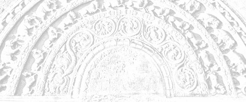

Sermon 17
Namo tassa bhagavato arahato sammāsambuddhassa
Namo tassa bhagavato arahato sammāsambuddhassa
Namo tassa bhagavato arahato sammāsambuddhassaEtaṁ santaṁ, etaṁ paṇītaṁ,
yadidaṁ sabbasaṅkhārasamatho sabbūpadhipaṭinissaggo
taṇhakkhayo virāgo nirodho nibbānaṁ.1“This is peaceful, this is excellent,
namely the stilling of all preparations, the relinquishment of all assets,
the destruction of craving, detachment, cessation, extinction.”
With the permission of the Most Venerable Great Preceptor and the assembly of the venerable meditative monks. This is the seventeenth sermon in the series of sermons on Nibbāna.
In our last sermon, we tried to analyse some discourses that give us a clue to understand what sort of an experience an arahant has in his realization of the cessation of existence in the arahattaphalasamādhi.
We happened to mention that the arahant sees the cessation of existence with a deeply penetrative vision of the void that may be compared to a gaze that knows no horizon. We also dropped the hint that the non-manifestative consciousness, endless and lustrous on all sides, we had spoken of in an earlier sermon,2 is an explicit reference to this same experience.
How the arahant, ranging in his triple pasture of the signless deliverance, the undirected deliverance and the void deliverance, animitta vimokkha, appaṇihita vimokkha and suññata vimokkha, gets free from the latency to perception, transcends the duality of form and formless, and crosses over this ocean of existence unhindered by Māra, has been described in various ways in various discourses.
Let us now take up for discussion in this connection three significant verses that are found in the Itivuttaka.
Ye ca rūpūpagā sattā
ye ca arūpaṭṭhāyino,
nirodhaṁ appajānantā
āgantāro punabbhavaṁ.Ye ca rūpe pariññāya,
arūpesu asaṇṭhitā,
nirodhe ye vimuccanti,
te janā maccuhāyino.Kāyena amataṁ dhātuṁ,
phusaytivā nirūpadhiṁ,
upadhipaṭinissaggaṁ,
sacchikatvā anāsavo,
deseti sammāsambuddho,
asokaṁ virajaṁ padaṁ.3Those beings that go to realms of form,
And those who are settled in formless realms,
Not understanding the fact of cessation,
Come back again and again to existence.Those who, having comprehended realms of form,
Do not settle in formless realms,
Are released in the experience of cessation,
It is they that are the dispellers of death.Having touched with the body the deathless element,
Which is asset-less,
And realized the relinquishment of assets,
Being influx-free, the perfectly enlightened one,
Proclaims the sorrow-less, taintless state.
The meaning of the first verse is clear enough. Those who are in realms of form and formless realms are reborn again and again due to not understanding the fact of cessation.
In the case of the second verse, there is some confusion as to the correct reading. We have mentioned earlier, too, that some of the deep discourses present considerable difficulty in determining what the correct reading is.4 They have not come down with sufficient clarity. Where the meaning is not clear enough, there is a likelihood for the oral tradition to become corrupt. Here we accepted the reading asaṇṭhitā.
Ye ca rūpe pariññāya,
arūpesu asaṇṭhitā,Those who, having comprehended realms of form,
Do not settle in formless realms.
But there is the variant reading susaṇṭhitā, which gives the meaning ‘settled well’. The two readings contradict each other and so we have a problem here. The commentary accepts the reading asaṇṭhitā.5 We too followed it, for some valid reason and not simply because it accords with the commentary.
However, in several modern editions of the text, the reading asaṇṭhitā has been replaced by susaṇṭhitā, probably because it seems to make sense, prima facie.
But, as we pointed out in this series of sermons, there is the question of the dichotomy between the form and the formless. The formless, or arūpa, is like the shadow of form, rūpa. Therefore, when one comprehends form, one also understands that the formless, too, is not worthwhile settling in. It is in that sense that we brought in the reading asaṇṭhitā in this context.
Those who have fully comprehended form, do not depend on the formless either, and it is they that are released in the realization of cessation. They transcend the duality of form and formless and, by directing their minds to the cessation of existence, attain emancipation.
In the last verse it is said that the Buddha realized the relinquishment of assets known as nirupadhi, the ‘asset-less’. It also says that he touched the deathless element with the body. In a previous sermon we happened to quote a verse from the Udāna which had the conclusive lines:
Phusanti phassā upadhiṁ paṭicca,
Nirupadhiṁ kena phuseyyum phassā.6Touches touch one because of assets,
How can touches touch him who is asset-less?
According to this verse, it seems that here there is no touch. So what we have stated above might even appear as contradictory. The above verse speaks of a ‘touching’ of the deathless element with the body. One might ask how one can touch, when there is no touch at all? But here we have an extremely deep idea, almost a paradox.
To be free from touch is in itself the ‘touching’ of the deathless element.
What we mean to say is that, as far as the fear of death is concerned, here we have the freedom from the pain of death and in fact the freedom from the concept of death itself.
The Buddha and the arahants, with the help of that wisdom, while in that arahattaphalasamādhi described as anāsavā cetovimutti paññāvimutti,7 or akuppā cetovimutti,8 let go of their entire body and realized the cessation of existence, thereby freeing themselves from touch and feeling. That is why Nibbāna is called a bliss devoid of feeling, avedayita sukha.9
This giving up, this letting go when Māra is coming to grab and seize, is a very subtle affair. To give up and let go when Māra comes to grab is to touch the deathless, because thereby one is freed from touch and feelings. Here, then, we have a paradox. So subtle is this Dhamma!
How does one realize cessation? By attending to the cessation aspect of preparations.
As we have already mentioned, to arise and to cease is of the nature of preparations, and here the attention is on the ceasing aspect. The worldlings in general pay attention to the arising aspect. They can see only that aspect. The Buddhas, on the other hand, have seen the cessation of existence in a subtle way. The culmination of the practice of paying attention to the cessation aspect of preparations is the realization of the cessation of existence.
Bhava, or existence, is the domain of Māra. How does one escape from the grip of Māra? By going beyond his range of vision, that is to say by attending to the cessation of existence, bhavanirodha.
All experiences of pleasure and pain are there so long as one is in bhava. The arahant wins to the freedom from form and formless and from pleasure and pain, as it was said in a verse already quoted:
Atha rūpā arūpā ca,
sukhadukkhā pamuccati.10And then from form and formless,
And from pleasure and pain is he freed.
We explained that verse as a reference to arahattaphalasamādhi. Here, too, we are on the same point. The concept of the cessation of existence is indeed very deep. It is so deep that one might wonder whether there is anything worthwhile in Nibbāna, if it is equivalent to the cessation of existence.
As a matter of fact, we do come across an important discourse among the Tens of the Aṅguttara Nikāya, where Nibbāna is explicitly called bhavanirodha. It is in the form of a dialogue between Venerable Ānanda and Venerable Sāriputta. As usual, Venerable Ānanda is enquiring about that extraordinary samādhi.
Siyā nu kho, āvuso Sāriputta, bhikkhuno tathārūpo samādhipaṭilābho yathā neva pathaviyaṁ pathavisaññī assa, na āpasmiṁ āposaññī assa, na tejasmiṁ tejosaññī assa, na vāyasmiṁ vāyosaññī assa, na ākāsānañcāyatane ākāsānañcāyatanasaññī assa, na viññāṇañcāyatane viññāṇancāyatanasaññī assa, na ākiñcaññāyatane ākiñcaññāyatanasaññī assa, na nevasaññānāsaññāyatane nevasaññānāsaññāyatanasaññī assa, na idhaloke idhalokasaññī assa, na paraloke paralokasaññī assa, – saññī ca pana assa?11
Could there be, friend Sāriputta, for a monk such an attainment of concentration wherein he will not be conscious of earth in earth, nor of water in water, nor of fire in fire, nor of air in air, nor will he be conscious of the sphere of infinite space in the sphere of infinite space, nor of the sphere of infinite consciousness in the sphere of infinite consciousness, nor of the sphere of nothingness in the sphere of nothingness, nor of the sphere of neither-perception-nor-non-perception in the sphere of neither-perception-nor-non-perception, nor of a this world in this world, nor of a world beyond in a world beyond – and yet he will be conscious?
Venerable Sāriputta’s reply to it is: “There could be, friend Ānanda.” Then Venerable Ānanda asks again: “But then, friend Sāriputta, in which manner could there be such an attainment of concentration for a monk?”
At that point Venerable Sāriputta comes out with his own experience, revealing that he himself once attained to such a samādhi, when he was at Andhavana in Sāvatthī. Venerable Ānanda, however, is still curious to ascertain what sort of perception he was having, when he was in that samādhi. The explanation given by Venerable Sāriputta in response to it, is of utmost importance. It runs:
Bhavanirodho nibbānaṁ, bhavanirodho nibbānan’ti kho me, avuso, aññā’va saññā uppajjati aññā’va saññā nirujjhati.
Seyyathāpi, āvuso, sakalikaggissa jhāyamānassa aññā’va acci uppajjati, aññā’va acci nirujjhati, evam eva kho me āvuso bhavanirodho nibbānaṁ, bhavanirodho nibbānam’ti aññā’va saññā uppajjati aññā’va saññā nirujjhati, bhavanirodho nibbānaṁ saññī ca panāhaṁ, āvuso, tasmiṁ samaye ahosiṁ.
One perception arises in me, friend: ‘cessation of existence is Nibbāna’, ‘cessation of existence is Nibbāna’, and another perception fades out in me: ‘cessation of existence is Nibbāna’, ‘cessation of existence is Nibbāna’.
Just as, friend, in the case of a twig fire, when it is burning one flame arises and another flame fades out. Even so, friend, one perception arises in me: ‘cessation of existence is Nibbāna’, ‘cessation of existence is Nibbāna’, and another perception fades out in me: ‘cessation of existence is Nibbāna’, ‘cessation of existence is Nibbāna’, at that time, friend, I was of the perception ‘cessation of existence is Nibbāna’.
The true significance of the simile of the twig fire is that Venerable Sāriputta was attending to the cessation aspect of preparations. As we mentioned in connection with the formula etaṁ santaṁ, etaṁ paṇītaṁ, “this is peaceful, this is excellent”, occurring in a similar context, we are not to conclude that Venerable Sāriputta kept on repeating “cessation of existence is Nibbāna”.
The insight into a flame could be different from a mere sight of a flame. Worldlings in general see only a process of burning in a flame. To the insight meditator it can appear as an intermittent series of extinctions. It is the outcome of a penetrative vision. Just like the flame, which simulates compactness, existence, too, is a product of saṅkhāras, or preparations.
The worldling who attends to the arising aspect and ignores the cessation aspect is carried away by the perception of the compact. But the mind, when steadied, is able to see the phenomenon of cessation:
Ṭhitaṁ cittaṁ vippamuttaṁ, vayañcassānupassati,12
the mind steadied and released contemplates its own passing away.
With that steadied mind the arahant attends to the cessation of preparations. At its climax, he penetrates the gamut of existence made up of preparations, as in the case of a flame, and goes beyond the clutches of death.
As a comparison for existence, the simile of the flame is quite apt. We happened to point out earlier, that the word upādāna can mean “grasping” as well as “fuel”.13 The totality of existence is sometimes referred to as a fire.14 The fuel for the fire of existence is grasping itself. With the removal of that fuel, one experiences extinction.
The dictum bhavanirodho nibbānam clearly shows that Nibbāna is the cessation of existence. There is another significant discourse which equates Nibbāna to the experience of the cessation of the six sense-bases, saḷāyatananirodha. The same experience of realization is viewed from a different angle. We have already shown that the cessation of the six sense-bases, or the six sense-spheres, is also called Nibbāna.15
The discourse we are now going to take up is one in which the Buddha presented the theme as some sort of a riddle for the monks to work out for themselves.
Tasmātiha, bhikkhave, se āyatane veditabbe yattha cakkhuñca nirujjhati rūpasaññā ca virajjati, se āyatane veditabbe yattha sotañca nirujjhati saddasaññā ca virajjati, se āyatane veditabbe yattha ghānañca nirujjhati gandhasaññā ca virajjati, se āyatane veditabbe yattha jivhā ca nirujjhati rasasaññā ca virajjati, se āyatane veditabbe yattha kāyo ca nirujjhati phoṭṭabbasaññā ca virajjati, se āyatane veditabbe yattha mano ca nirujjhati dhammasaññā ca virajjati, se āyatane veditabbe, se āyatane veditabbe.16
Therefore, monks, that sphere should be known wherein the eye ceases and perceptions of form fade away, that sphere should be known wherein the ear ceases and perceptions of sound fade away, that sphere should be known wherein the nose ceases and perceptions of smell fade away, that sphere should be known wherein the tongue ceases and perceptions of taste fade away, that sphere should be known wherein the body ceases and perceptions of the tangible fade away, that sphere should be known wherein the mind ceases and perceptions of mind objects fade away, that sphere should be known, that sphere should be known.
There is some peculiarity in the very wording of the passage, when it says, for instance, that the eye ceases, cakkhuñca nirujjhati and perceptions of form fade away, rūpasaññā ca virajjati. As we once pointed out, the word virāga, usually rendered by ‘detachment’, has a nuance equivalent to ‘fading away’ or ‘decolouration’.17 Here that nuance is clearly evident. When the eye ceases, perceptions of forms fade away.
The Buddha is enjoining the monks to understand that sphere, not disclosing what it is, in which the eye ceases and perceptions of form fade away, and likewise the ear ceases and perceptions of sound fade away, the nose ceases and perceptions of smell fade away, the tongue ceases and perceptions of taste fade away, the body ceases and perceptions of the tangible fade away, and last of all even the mind ceases and perceptions of mind objects fade away. This last is particularly noteworthy.
Without giving any clue to the meaning of this brief exhortation, the Buddha got up and entered the monastery, leaving the monks perplexed. Wondering how they could get it explained, they approached Venerable Ānanda and begged him to comment at length on what the Buddha had preached in brief.
With some modest reluctance, Venerable Ānanda complied, urging that his comment be reported to the Buddha for confirmation. His comments, however, amounted to just one sentence:
Saḷāyatananirodhaṁ, kho āvuso, Bhagavatā sandhāya bhāsitaṁ.
Friends, it is with reference to the cessation of the six sense-spheres that the Exalted One has preached this sermon.
When those monks approached the Buddha and placed Venerable Ānanda’s explanation before him, the Buddha ratified it. Hence it is clear that the term āyatana in the above passage refers not to any one of the six sense-spheres, but to Nibbāna, which is the cessation of all of them.
The commentator, Venerable Buddhaghosa, too accepts this position in his commentary to the passage in question.
Saḷāyatananirodhan’ti saḷāyatananirodho vuccati nibbānam, tam sandhāya bhāsitan ti attho,18
the cessation of the six sense-spheres, what is called the cessation of the six sense-spheres is Nibbāna, the meaning is that the Buddha’s sermon is a reference to it.
The passage in question bears testimony to two important facts. Firstly that Nibbāna is called the cessation of the six sense-spheres. Secondly that this experience is referred to as an āyatana, or a ‘sphere’.
The fact that Nibbāna is sometimes called āyatana is further corroborated by a certain passage in the Saḷāyatanvibhaṅgasutta, which defines the term nekkhammasita domanassa.19 In that discourse, which deals with some deeper aspects of the Dhamma, the concept of nekkhammasita domanassa, or “unhappiness connected with renunciation”, is explained as follows:
If one contemplates with insight wisdom the sense-objects like forms and sounds as impermanent, suffering-fraught and transient, and develops a longing for Nibbāna, due to that longing or expectation one might feel an unhappiness. It is such an unhappiness which, however, is superior to an unhappiness connected with the household life, that is called nekkhammasita domanassa, or “unhappiness connected with renunciation”.
How such an unhappiness may arise in a monk is described in that discourse in the following manner:
‘Kudāssu nāmāhaṁ tadāyatanaṁ upasampajja viharissāmi yadariyā etarahi āyatanaṁ upasampajja viharanti?’ iti anuttaresu vimokkhesu pihaṁ upaṭṭhāpayato uppajjati pihāpaccayā domanassaṁ. Yaṁ evarūpaṁ domanassaṁ idaṁ vuccati nekkhammasitadomanassaṁ.
‘O, when shall I attain to and dwell in that sphere to which the Noble Ones now attain and dwell in?’ Thus, as he sets up a longing for the incomparable deliverances, there arises an unhappiness due to that longing. It is such an unhappiness that is called unhappiness connected with renunciation.
What are called ‘incomparable deliverances’ are the three doorways to Nibbāna, the signless, the undirected and the void. We can therefore conclude that the sphere to which this monk aspires is none other than Nibbāna. So here we have a second instance of a reference to Nibbāna as a ‘sphere’ or āyatana.
Now let us bring up a third:
Atthi, bhikkhave, tad āyatanaṁ, yattha n’eva pathavī na āpo na tejo na vāyo na ākāsānañcāyatanaṁ na viññāṇānañcāyatanaṁ na ākiñcaññāyatanaṁ na nevasaññānāsaññāyatanaṁ na ayaṁ loko na paraloko na ubho candimasūriyā. Tatra p’ahaṁ bhikkhave, n’eva āgatiṁ vadāmi na gatiṁ na ṭhitiṁ na cutiṁ na upapattiṁ, appatiṭṭhaṁ appavattaṁ anārammaṇaṁ eva taṁ. Es’ev’anto dukkhassā’ti.20
Incidentally, this happens to be the most controversial passage on Nibbāna. Scholars, both ancient and modern, have put forward various interpretations of this much vexed passage. Its riddle-like presentation has posed a challenge to many a philosopher bent on determining what Nibbāna is.
This brief discourse comes in the Udāna as an inspired utterance of the Buddha on the subject of Nibbāna, Nibbānapaṭisamyuttasutta. To begin with, we shall try to give a somewhat literal translation of the passage:
Monks, there is that sphere, wherein there is neither earth, nor water, nor fire, nor air; neither the sphere of infinite space, nor the sphere of infinite consciousness, nor the sphere of nothingness, nor the sphere of neither-perception-nor-non-perception; neither this world nor the world beyond, nor the sun and the moon. There, monks, I say, is no coming, no going, no staying, no passing away and no arising; it is not established, it is not continuing, it has no object. This, itself, is the end of suffering.
Instead of getting down to the commentarial interpretation at the very outset, let us try to understand this discourse on the lines of the interpretation we have so far developed. We have already come across two references to Nibbāna as an āyatana or a sphere. In the present context, too, the term āyatana is an allusion to arahattaphalasamādhi. Its significance, therefore, is psychological.
First of all we are told that earth, water, fire and air are not there in that āyatana. This is understandable, since in a number of discourses dealing with anidassana viññāṇa and arahattaphalasamādhi we came across similar statements.
It is said that in anidassana viññāṇa, or non-manifestative consciousness, earth, water, fire and air do not find a footing. Similarly, when one is in arahattaphalasamādhi, one is said to be devoid of the perception of earth in earth, for instance, because he does not attend to it. So the peculiar negative formulation of the above Udāna passage is suggestive of the fact that these elements do not exercise any influence on the mind of one who is in arahattaphalasamādhi.
The usual interpretation, however, is that it describes some kind of a place or a world devoid of those elements. It is generally believed that the passage in question is a description of the ‘sphere’ into which the arahant passes away, that is, his after death ‘state’. This facile explanation is often presented only as a tacit assumption, for fear of being accused of heretical views. But it must be pointed out that the allusion here is to a certain level of experience of the living arahant, namely the realization, here and now, of the cessation of existence, bhavanirodha.
The four elements have no part to play in that experience. The sphere of infinite space, the sphere of infinite consciousness etc. also do not come in, as we have already shown with reference to a number of discourses. So it is free from both form and formless.
The statement that there is neither this world nor a world beyond could be understood in the light of the phrase,
na idhaloke idhalokasaññī, na paraloke paralokasaññī,
percipient neither of a this world in this world, nor of a world beyond in a world beyond
that came up in a passage discussed above.
The absence of the moon and the sun, na ubho candima sūriyā, in this sphere, is taken as the strongest argument in favour of concluding that Nibbāna is some kind of a place, a place where there is no moon or sun.
But as we have explained in the course of our discussion of the term anidassana viññāṇa, or non-manifestative consciousness, with the cessation of the six sense-spheres, due to the all lustrous nature of the mind, sun and moon lose their lustre, though the senses are all intact. Their lustre is superseded by the lustre of wisdom. They pale away and fade into insignificance before it. It is in this sense that the moon and the sun are said to be not there in that sphere.
Why there is no coming, no going, no staying, no passing away and no arising, can be understood in the light of what we have observed in earlier sermons on the question of relative concepts.
The verbal dichotomy characteristic of worldly concepts is reflected in this reference to a coming and a going etc. The arahant in arahattaphalasamādhi is free from the limitations imposed by this verbal dichotomy.
The three terms appatiṭṭhaṁ, appavattaṁ and anārammaṇaṁ, ‘not established’, ‘not continuing’ and ‘objectless’, are suggestive of the three doorways to deliverance.
Appatiṭṭhaṁ refers to appaṇihita vimokkha, ‘undirected deliverance’, which comes through the extirpation of craving.
Appavattaṁ stands for suññata vimokkha, the ‘void deliverance’, which is the negation of continuity.
Anārammaṇaṁ is clearly enough a reference to animitta vimokkha, the ‘signless deliverance’. Not to have an object is to be signless.
The concluding sentence “this itself is the end of suffering” is therefore a clear indication that the end of suffering is reached here and now. It does not mean that the arahant gets half of Nibbāna here and the other half ‘there’.
Our line of interpretation leads to such a conclusion, but of course, in case there are shortcomings in it, we could perhaps improve on it by having recourse to the commentarial interpretation.
Now as to the commentarial interpretation, this is how the Udāna commentary explains the points we have discussed:21 It paraphrases the term āyatana by kāraṇa, observing that it means reason in this context. Just as much as forms stand in relation of an object to the eye, so the asaṅkhata dhātu, or the ‘unprepared element’, is said to be an object to the arahant’s mind, and here it is called āyatana.
Then the commentary raises the question, why earth, water, fire and air are not there in that asaṅkhata dhātu. The four elements are representative of things prepared, saṅkhata. There cannot be any mingling or juxtaposition between the saṅkhata and the asaṅkhata. That is why earth, water, fire and air are not supposed to be there, in that āyatana.
The question why there are no formless states, like the sphere of infinite space, the sphere of infinite consciousness, the sphere of nothingness, the sphere of neither-perception-nor-non-perception, is similarly explained, while asserting that Nibbāna is nevertheless formless.
Since in Nibbāna one has transcended the sensuous sphere, kāmaloka, the concepts of a this world and a world beyond are said to be irrelevant. As to why the sun and the moon are not there, the commentary gives the following explanation:
In realms of form there is generally darkness, to dispel which there must be a sun and a moon. But Nibbāna is not a realm of form, so how could sun and moon come in?
Then what about the reference to a coming, a going, a staying, a passing away and an arising? No one comes to Nibbāna from anywhere and no one goes out from it, no one stays in it or passes away or reappears in it.
Now all this is mystifying enough. But the commentary goes on to interpret the three terms appatiṭṭhaṁ, appavattaṁ and anārammaṇaṁ also in the same vein. Only that which has form gets established and Nibbāna is formless, therefore it is not established anywhere. Nibbāna does not continue, so it is appavattaṁ, or non-continuing. Since Nibbāna takes no object, it is objectless, anārammaṇaṁ. It is as good as saying that, though one may take Nibbāna as an object, Nibbāna itself takes no object.
So this is what the traditional interpretation amounts to. If there are any shortcomings in our explanation, one is free to go for the commentarial. But it is obvious that there is a lot of confusion in this commentarial trend. Insufficient appreciation of the deep concept of the cessation of existence seems to have caused all this confusion.
More often than otherwise, commentarial interpretations of Nibbāna leaves room for some subtle craving for existence, bhavataṇhā. It gives a vague idea of a place or a sphere, āyatana, which serves as a surrogate destination for the arahants after their demise. Though not always explicitly asserted, it is at least tacitly suggested. The description given above is ample proof of this trend. It conjures up a place where there is no sun and no moon, a place that is not a place. Such confounding trends have crept in probably due to the very depth of this Dhamma.
Deep indeed is this Dhamma and hard to comprehend, as the Buddha once confided in Venerable Sāriputta with a trace of tiredness:
Saṅkhittenapi kho ahaṁ, Sāriputta, dhammaṁ deseyyaṁ, vitthārenapi kho ahaṁ, Sāriputta, dhammaṁ deseyyaṁ, saṅkhittenavitthārenapi kho ahaṁ, Sāriputta, dhammaṁ deseyyaṁ, aññātāro ca dullabhā.22
Whether I were to preach in brief, Sāriputta, or whether I were to preach in detail, Sāriputta, or whether I were to preach both in brief or in detail, Sāriputta, rare are those who understand.
Then Venerable Sāriputta implores the Buddha to preach in brief, in detail and both in brief and in detail, saying that there will be those who understand. In response to it the Buddha gives the following instruction to Venerable Sāriputta:
Tasmātiha, Sāriputta, evaṁ sikkhitabbaṁ: ’Imasmiñca saviññāṇake kāye ahaṅkāramamaṅkāramānānusayā na bhavissanti, bahiddhā ca sabbanimittesu ahaṅkāramamaṅkāramānānusayā na bhavissanti, yañca cetovimuttiṁ paññāvimuttiṁ upasampajja viharato ahaṅkāramamaṅkāramānānusayā na honti, tañca cetovimuttiṁ paññāvimuttiṁ upasampajja viharissāmā’ti. Evañhi kho, Sāriputta, sikkhitabbaṁ,
If that is so, Sāriputta, you all should train yourselves thus: In this conscious body and in all external signs there shall be no latencies to conceits in terms of I-ing and my-ing, and we will attain to and dwell in that deliverance of the mind and that deliverance through wisdom whereby no such latencies to conceits of I-ing and my-ing will arise. Thus should you all train yourselves!
The Buddha goes on to declare the final outcome of that training:
Ayaṁ vuccati, Sāriputta, bhikkhu acchecchi taṇhaṁ vāvattayi saṁyojanaṁ sammā mānābhisamayā antam akāsi dukkhassa.
Such a monk, Sāriputta, is called one who has cut off craving, turned back the fetters, and by rightly understanding conceit for what it is, has made an end of suffering.
We find the Buddha summing up his exhortation by quoting two verses from a sutta in the Pārāyanavagga of the Sutta Nipāta, which he himself had preached to the Brahmin youth Udaya.
We may mention in passing that among canonical texts, the Sutta Nipāta was held in high esteem so much so that in a number of discourses the Buddha is seen quoting from it, particularly from the two sections Aṭṭhakavagga and Pārāyanavagga. Now the two verses he quotes in this instance from the Pārāyanavagga are as follows:
Pahānaṁ kāmacchandānaṁ,
domanassāna cūbhayaṁ,
thīṇassa ca panūdanaṁ,
kukkuccānaṁ nivāraṇaṁ,Upekhāsatisaṁsuddhaṁ,
dhammatakkapurejavaṁ,
aññāvimokhaṁ pabrūmi,
avijjāyappabhedanaṁ.23The abandonment of both sensuous perceptions,
And unpleasant mental states,
The dispelling of torpidity,
And the warding off of remorse,The purity born of equanimity and mindfulness,
With thoughts of Dhamma forging ahead,
And blasting ignorance,
This I call the deliverance through full understanding.
This is ample proof of the fact that the arahattaphalasamādhi is also called aññāvimokkha. Among the Nines of the Aṅguttara Nikāya we come across another discourse which throws more light on the subject. Here Venerable Ānanda is addressing a group of monks.
Acchariyaṁ, āvuso, abbhutam, āvuso, yāvañcidaṁ tena Bhagavatā jānatā passatā arahatā sammāsambuddhena sambādhe okāsādhigamo anubuddho sattānaṁ visuddhiyā sokapariddavānaṁ samatikkamāya dukkhadomanassānaṁ atthaṅgamāya ñāyassa adhigamāya nibbānassa sacchikiriyāya.
Tadeva nāma cakkhuṁ bhavissati te rūpā tañcāyatanaṁ no paṭisaṁvedissati. Tadeva nāma sotaṁ bhavissati te saddā tañcāyatanaṁ no paṭisaṁvedissati. Tadeva nāma ghānaṁ bhavissati te gandhā tañcāyatanaṁ no paṭisaṁvedissati. Sā ca nāma jivhā bhavissati te rasā tañcāyatanaṁ no paṭisaṁvedissati. So ca nāma kāyo bhavissati te phoṭṭhabbā tañcāyatanaṁ no paṭisaṁvedissati.24
It is wonderful, friends, it is marvellous, friends, that the Exalted One who knows and sees, that Worthy One, fully enlightened, has discovered an opportunity in obstructing circumstances for the purification of beings, for the transcending of sorrow and lamentation, for the ending of pain and unhappiness, for the attainment of the right path, for the realization of Nibbāna.
In as much as that same eye will be there, those forms will be there, but one will not be experiencing the appropriate sense-sphere. That same ear will be there, those sounds will be there, but one will not be experiencing the appropriate sense-sphere. That same nose will be there, those smells will be there, but one will not be experiencing the appropriate sense-sphere. That same tongue will be there, those flavours will be there, but one will not be experiencing the appropriate sense-sphere. That same body will be there, those tangibles will be there, but one will not be experiencing the appropriate sense-sphere.
What is so wonderful and marvellous about this newly discovered opportunity is that, though apparently the senses and their corresponding objects come together, there is no experience of the appropriate spheres of sense contact. When Venerable Ānanda had described this extraordinary level of experience in these words, Venerable Udāyī raised the following question:
Saññīmeva nu kho āvuso Ānanda, tadāyatanaṁ no paṭisaṁvedeti udāhu asaññī?
Friend, is it the fact that while being conscious one is not experiencing that sphere or is he unconscious at that time?
Venerable Ānanda affirms that it is while being conscious, saññīmeva, that such a thing happens. Venerable Udāyī’s cross-question gives us a further clue to the riddle like verse we discussed earlier, beginning with na sañña saññī na visañña saññī.
It is indeed puzzling why one does not experience those sense-objects, though one is conscious. As if to drive home the point, Venerable Ānanda relates how he once answered a related question put to him by the nun Jaṭilagāhiyā when he was staying at the Deer park in Añjanavana in Sāketa. The question was:
Yāyaṁ, bhante Ānanda, samādhi na cābhinato na cāpanato na ca sasaṅkhāraniggayhavāritavato, vimuttattā ṭhito, ṭhitattā santusito, santusitattā no paritassati. Ayaṁ, bhante, samādhi kiṁphalo vutto Bhagavatā?
That concentration, Venerable Ānanda, which is neither turned towards nor turned outwards, which is not a vow constrained by preparations, one that is steady because of freedom, contented because of steadiness and not hankering because of contentment, Venerable Sir, with what fruit has the Exalted One associated that concentration?
The question looks so highly compressed that the key words in it might need some clarification. The two terms abhinata and apanata are suggestive of lust and hate, as well as introversion and extroversion. This concentration is free from these extreme attitudes.
Whereas in ordinary concentration saṅkhāras, or preparations, exercise some degree of control as the term vikkhambhana, ‘propping up’, ‘suppression’, suggests, here there is no implication of any forcible action as in a vow. Here the steadiness is born of freedom from that very constriction.
Generally, the steadiness characteristic of a level of concentration is not much different from the apparent steadiness of a spinning top. It is the spinning that keeps the top up. But here the very freedom from that spinning has brought about a steadiness of a higher order, which in its turn gives rise to contentment.
The kind of peace and contentment that comes with samādhi in general is brittle and irritable. That is why it is sometimes called kuppa paṭicca santi, “peace subject to irritability”.25 Here, on the contrary, there is no such irritability.
We can well infer from this that the allusion is to akuppā cetovimutti, “unshakeable deliverance of the mind”. The kind of contentment born of freedom and stability is so perfect that it leaves no room for hankering, paritassanā.
However, the main point of the question posed by that nun amounts to this: What sort of a fruit does a samādhi of this description entail, according to the words of the Exalted One?
After relating the circumstances connected with the above question as a flash back, Venerable Ānanda finally comes out with the answer he had given to the question:
Yāyaṁ, bhagini, samādhi na cābhinato na cāpanato na ca sasaṅkhāraniggayhavāritavato, vimuttattā ṭhito, ṭhitattā santusito, santusitattā no paritassati, ayaṁ, bhagini, samādhi aññāphalo vutto Bhagavatā.
Sister, that concentration which is neither turned towards nor turned outwards, which is not a vow constrained by preparations, one that is steady because of freedom, contented because of steadiness and not hankering because of contentment, that concentration, sister, has been declared by the Buddha to have full understanding as its fruit.
Aññā, or full understanding, is one that comes with realization conferring certitude and it is the fruit of the concentration described above. Then, as if coming back to the point, Venerable Ānanda adds:
Evaṁ saññīpi kho, āvuso, tad āyatanaṁ no paṭisaṁvedeti.
Being thus conscious, too, friend, one does not experience an appropriate sphere of sense.
So now we have garnered sufficient evidence to substantiate the claims of this extraordinary arahattaphalasamādhi. It may also be mentioned that sometimes this realization of the arahant is summed up in a sentence like
anāsavaṁ cetovimuttiṁ paññāvimuttiṁ diṭṭheva dhamme sayaṁ abhiññā sacchikatvā upasampajja viharati,26
having realized by himself through higher knowledge here and now the influx-free deliverance of the mind and deliverance through wisdom, he dwells having attained to it.
There is another significant discourse in the section of the Fours in the Aṅguttara Nikāya which throws some light on how one should look upon the arahant when he is in arahattaphalasamādhi. The discourse deals with four types of persons, namely:
- anusotagāmī puggalo, “downstream bound person”
- paṭisotagāmī puggalo, “upstream bound person”
- ṭhitatto puggalo, “stationary person”
- tiṇṇo pāragato thale tiṭṭhati brāhmaṇo, “the Brahmin standing on dry ground having crossed over and gone beyond”.27
The first type of person indulges in sense pleasures and commits evil deeds and is thus bound downstream in saṁsāra.
The second type of person refrains from indulgence in sense pleasures and from evil deeds. His upstream struggle is well expressed in the following sentence:
Sahāpi dukkhena sahāpi domanassena assumukhopi rudamāno paripuṇṇaṁ parisuddhaṁ brahmacariyaṁ carati,
even with pain, even with displeasure, with tearful face and crying he leads the holy life in its fullness and perfection.
The third type, the stationary, is the non-returner who, after death, goes to the Brahma world and puts and end to suffering there, without coming back to this world.
It is the fourth type of person who is said to have crossed over and gone to the farther shore, tiṇṇo pāragato, and stands there, thale tiṭṭhati.
The word brahmin is used here as an epithet of an arahant. This riddle-like reference to an arahant is explained there with the help of the more thematic description
āsavānaṁ khayā anāsavaṁ cetovimuttiṁ paññāvimuttiṁ diṭṭheva dhamme sayaṁ abhiññā sacchikatvā upasampajja viharati,
with the extinction of influxes he attains to and abides in the influx free deliverance of the mind and deliverance through wisdom.
This brings us to an extremely deep point in our discussion on Nibbāna. If the arahant in arahattaphalasamādhi is supposed to be standing on the farther shore, having gone beyond, what is the position with him when he is taking his meals or preaching in his every day life? Does he now and then come back to this side?
Whether the arahant, having gone to the farther shore, comes back at all is a matter of dispute. The fact that it involves some deeper issues is revealed by some discourses touching on this question.
The last verse of the Paramaṭṭhakasutta of the Sutta Nipāta, for instance, makes the following observation:
Na kappayanti na purekkharonti,
dhammā pi tesaṁ na paṭicchitāse,
na brāhmaṇo sīlavatena neyyo,
pāraṁgato na pacceti tādi.28They, the arahants,
do not formulate or put forward views,
They do not subscribe to any views,
The true Brahmin is not liable to be led astray
by ceremonial rites and ascetic vows,
The Such like One,
who has gone to the farther shore, comes not back.
It is the last line that concerns us here. For the arahant it uses the term tādī, a highly significant term which we came across earlier too. The rather literal rendering ‘such-like’ stands for steadfastness, for the unwavering firmness to stand one’s ground.
So, the implication is that the arahant, once gone beyond, does not come back. The steadfastness associated with the epithet tādī is reinforced in one Dhammapada verse by bringing in the simile of the firm post at the city gate:
Indakhīlūpamo tādi subbato,29
who is steadfast and well conducted like the pillar at the city gate.
The verse in question, then, points to the conclusion that the steadfast one, the arahant, who has attained supramundane freedom, does not come back.